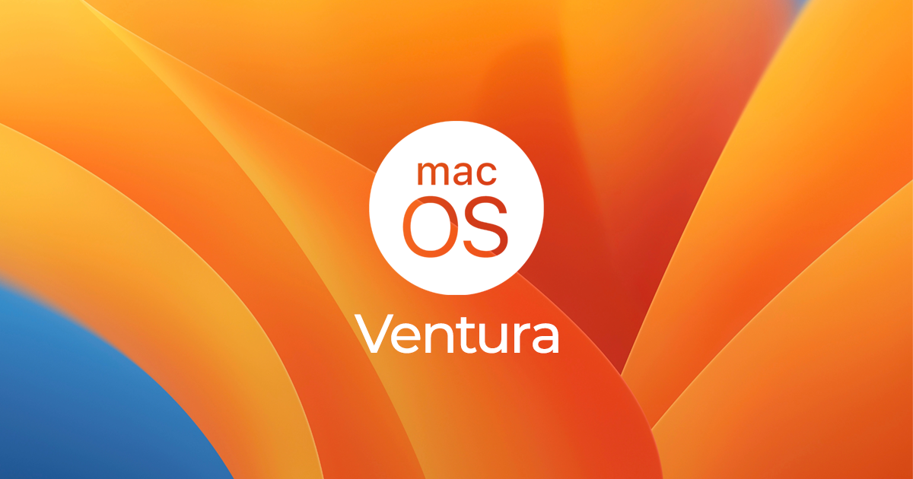

Разделы урока
Введение
MacOS - это операционная система, разработанная и выпущенная Apple Inc. Она представляет собой мощную и интуитивно понятную платформу для компьютеров Mac. Сочетание стабильности, безопасности и удобства использования делает macOS одной из самых популярных операционных систем среди пользователей.
История
В 1996 году Apple приобрела компанию NeXT, основанную Стивом Джобсом после его ухода из Apple. Одним из ключевых активов, приобретенных Apple, была операционная система NeXTSTEP, которая впоследствии стала основой для будущих версий MacOS. Слияние технологий NeXT и Apple привело к созданию новой операционной системы, названной Mac OS X. Она была анонсирована в 2000 году. Mac OS X была радикально новой операционной системой, основанной на ядре Darwin, открытом исходном коде, разработанном на базе FreeBSD и Mach. С течением времени Mac OS X эволюционировала. Она прошла через ряд версий, каждая из которых вносила улучшения в интерфейс, функциональность и производительность. В 2012 году Apple объявила о переходе к новому именованию для своей операционной системы, она стала называться MacOS, чтобы выделить ее схожесть с другими операционными системами компании, такими как iOS, watchOS и tvOS. С тех пор MacOS постоянно развивается и совершенствуется, внедряя новые функции, обеспечивая более высокую производительность и обеспечивая безопасность пользователей. Такие версии, как MacOS Sierra, High Sierra, Mojave, Catalina, и более поздние Big Sur и Monterey, претворяют в жизнь визию Apple о мощной и удобной операционной системе для персональных компьютеров Mac.
Применение
MacOS широко используется в качестве операционной системы для компьютеров Mac, как в домашней, так и в профессиональной среде. Его применение включает в себя работу с офисными приложениями, разработку программного обеспечения, мультимедийное творчество, веб-серфинг и многое другое. Кроме того, MacOS популярна среди разработчиков и дизайнеров благодаря своей мощной инструментальной базе. Но в сфере видеоигр, MacOS имеет самую малую поддержку. Игр для данной ОС меньше всего.
Отличие от Windows и Linux
MacOS отличается от других операционных систем, таких как Windows и Linux, в нескольких аспектах. В отличие от Windows, MacOS предлагает более интегрированный и стабильный пользовательский интерфейс, а также обладает высоким уровнем безопасности. По сравнению с Linux, MacOS обычно имеет более удобную и интуитивно понятную среду, хотя и менее гибкую и настраиваемую. Однако MacOS имеет не такую большую библиотеку программного обеспечения. Также, из-за большой стоимости разработки и выпуска программ под MacOS, стоит программное обеспечение дороже, чем версии для Windows.
Файловая система
MacOS использует файловую систему HFS+ (Hierarchical File System Plus) или APFS (Apple File System), в зависимости от версии операционной системы. Эти файловые системы обеспечивают надежное хранение данных, поддерживают различные функции, такие как шифрование и сжатие данных, а также обеспечивают высокую производительность. MacOS также неследовала файловую систему от UNIX

Тест
Какая компания разработала MacOS?
В сравнении с Windows и Linux, MacOS отличается своей
Какие файловые системы используются в macOS?
В каком году была анонсирована MacOS?
Как называется ядро MacOS?